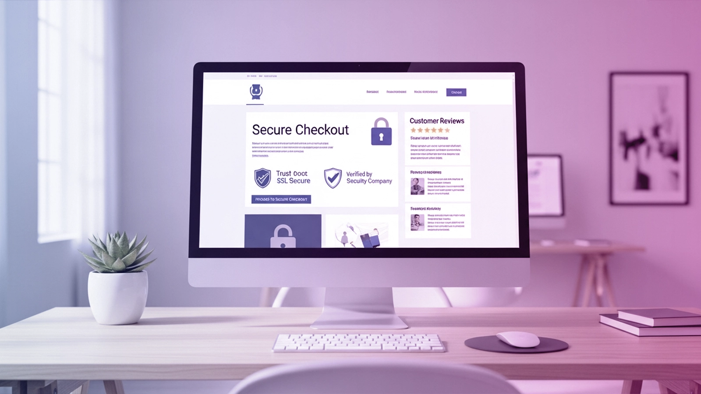
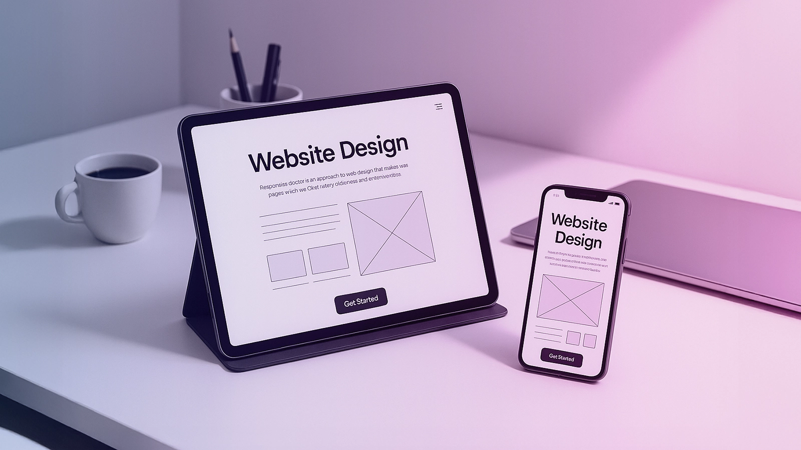

In today's digital landscape, a well-crafted online presence is crucial for businesses aiming to establish customer trust. A professionally designed website not only attracts potential clients but also fosters a sense of reliability and credibility. Milaknight , a leading digital marketing company, understands the importance of website design in achieving this goal. By providing comprehensive solutions, including website optimization, Milaknight helps businesses succeed in the competitive online market.
Key Takeaways
- A well-designed website is essential for building customer trust.
- Professional website design enhances a company's online credibility.
- Milaknight offers comprehensive digital marketing solutions.
- Effective website optimization is crucial for online success.
- A strong online presence is vital in today's digital landscape.
The Fundamental Connection Between Website Design and Customer Trust
The design of a website plays a crucial role in establishing customer trust in today's online marketplace. A well-crafted website not only attracts visitors but also retains them by fostering a sense of reliability and professionalism.
First Impressions in the Digital World
The initial impression a visitor gets from a website is formed within milliseconds. This is where the 50-Millisecond Rule of Trust Formation comes into play.
The 50-Millisecond Rule of Trust Formation
Research has shown that it takes approximately 50 milliseconds for users to form an opinion about a website. This instantaneous judgment is based on the site's aesthetics, layout, and overall visual appeal.
Visual Hierarchy and Trust Signals
A well-structured visual hierarchy guides the visitor's attention to key elements, such as trust signals (e.g., security badges, customer testimonials). These elements are crucial in building trust.
The Psychology Behind Digital Trust
Understanding the psychological factors that influence trust is vital. Cognitive biases play a significant role in how users perceive a website.
Cognitive Biases Affecting Online Trust
- Cognitive biases, such as confirmation bias, affect how users evaluate a website's credibility.
- Users tend to trust websites that align with their expectations and values.
Trust Barriers in Saudi Arabian Markets
In Saudi Arabia, cultural and linguistic factors can impact trust. A website that is sensitive to these nuances can overcome potential barriers.
Essential Elements of Trust-Building Website Design
A trust-building website design is not just about creating a visually appealing site; it's about crafting an online presence that instills confidence in your visitors. Trust-building website design is a multifaceted approach that encompasses various essential elements.
Professional Aesthetics and Brand Consistency
The aesthetic appeal of your website plays a significant role in forming first impressions. A professional-looking website with consistent branding elements such as logos, color schemes, and typography helps to establish credibility.
Color Psychology in Trust Formation
Colors can evoke different emotions and perceptions. For instance, blue is often associated with trust and stability, while green symbolizes growth and harmony. Choosing the right color palette that aligns with your brand's message is crucial.
Typography and Its Impact on Credibility
The choice of typography can significantly influence how your content is perceived. Fonts that are clear, legible, and consistent across the website contribute to a professional appearance, enhancing credibility.
Intuitive Navigation and Information Architecture
An intuitive navigation system ensures that visitors can easily find the information they're looking for. A well-structured information architecture is vital for a positive user experience.
Menu Structure Best Practices
A simple, organized menu structure is essential. Limiting the number of menu items and using clear, descriptive labels can improve navigation.
Search Functionality and User Guidance
Incorporating a robust search function can significantly enhance user experience by allowing visitors to quickly locate specific content. Providing guidance through the use of breadcrumbs and clear calls-to-action further aids navigation.
By incorporating these essential elements, businesses can create a trust-building website design that not only attracts but also retains customers, ultimately driving business success in the digital marketplace.
Website Design, Customer Trust, User Experience, and Digital Marketing Integration
In today's digital landscape, the synergy between website design, customer trust, user experience, and digital marketing is crucial for business success. At Milaknight, we build inspiring and impactful success stories with you by focusing on the interconnected nature of these elements.
The Interconnected Nature of Design and Marketing
A well-designed website is not just about aesthetics; it's a powerful tool that combines with digital marketing to enhance customer trust and user experience. Conversion-focused design elements play a critical role in achieving this goal.
Conversion-Focused Design Elements
Elements such as clear calls-to-action, intuitive navigation, and responsive design are crucial. These features not only improve the user experience but also guide visitors toward becoming leads.
Brand Consistency Across Touchpoints
Maintaining brand consistency across all digital touchpoints is vital. This includes ensuring that the website design aligns with the overall brand identity and messaging used in digital marketing campaigns.
Trust as the Foundation of Digital Marketing Success
Trust is the foundation upon which successful digital marketing strategies are built. It's about creating a journey that turns visitors into loyal customers.
From Visitor to Lead: The Trust Journey
The journey from a visitor to a lead involves several steps, including engaging content, transparent communication, and a seamless user experience. Trust indicators such as customer testimonials and security badges can significantly enhance this journey.
Milaknight's Holistic Approach to Digital Trust
At Milaknight, we adopt a holistic approach to building digital trust. This involves not just designing trust-building websites but also integrating trust elements into the overall digital marketing strategy.
By understanding the intricate relationship between website design, customer trust, user experience, and digital marketing, businesses can create a robust online presence that drives success.
User Experience Optimization for Enhanced Customer Confidence
In the digital age, user experience plays a pivotal role in fostering customer trust and confidence. A well-designed website not only attracts visitors but also retains them by providing a seamless and intuitive experience.
Page Speed and Performance Metrics
Page speed is a critical factor in user experience optimization. A slow-loading website can lead to high bounce rates and decreased customer confidence. To address this, several performance metrics need to be considered.
- Loading Time: Ensuring that pages load quickly, ideally within 3 seconds.
- Server Response Time: Optimizing server response to reduce latency.
- Resource Optimization: Compressing images and minifying CSS/JavaScript files.
Mobile Loading Time Optimization
With the majority of users accessing websites through mobile devices, optimizing mobile loading times is crucial. This involves:
- Using responsive design to adapt to different screen sizes.
- Optimizing images for mobile devices.
- Minimizing the use of heavy JavaScript and CSS files.
Server Response and Hosting Considerations
The choice of hosting and server configuration significantly impacts page speed. Reliable hosting services with optimized server configurations can enhance performance.
- Choosing a hosting provider with a good reputation.
- Utilizing Content Delivery Networks (CDNs) to reduce latency.
Accessibility Features for Inclusive Design
Accessibility is a key aspect of user experience optimization, ensuring that all users, including those with disabilities, can navigate and use the website effectively.
WCAG Compliance and Business Benefits
Complying with the Web Content Accessibility Guidelines (WCAG) not only enhances accessibility but also has business benefits, such as improved SEO and broader audience reach.
- Ensuring compliance with WCAG 2.1 guidelines.
- Conducting regular accessibility audits.
Accessibility Tools and Implementation
Various tools and techniques can be employed to implement accessibility features, including:
- Using accessibility plugins and tools for website audits.
- Implementing ARIA attributes for dynamic content.
- Ensuring keyboard navigability and screen reader compatibility.
Security Elements That Visibly Enhance Customer Trust
Building trust with customers is crucial, and one of the most effective ways to do this is through robust website security. A secure website not only protects customer data but also assures visitors that their information is safe, thereby fostering trust.
Visual Trust Indicators and Security Badges
Visual trust indicators play a significant role in communicating a website's security to its visitors. These include:
- SSL Certificates and HTTPS Implementation: Indicated by a padlock icon in the browser's address bar, SSL certificates signify that the connection between the website and the browser is secure.
- Payment Security Visuals and Messaging: Displaying security badges from payment providers can reassure customers about the safety of their transactions.
Privacy Policy Transparency and Compliance
Transparency regarding how customer data is handled is crucial. This includes:
- GDPR and Local Saudi Arabian Regulations: Compliance with these regulations demonstrates a commitment to protecting customer data.
- Cookie Consent and User Control: Providing clear information about cookie usage and giving users control over their data enhances trust.
At Milaknight, we're more than just an online marketing company; we're partners in your success. We understand the importance of security in building customer trust and incorporate robust security measures into our web design strategies.


Content Strategy as a Powerful Trust-Building Tool
Trust is built when a brand's content strategy effectively communicates its value proposition and authenticity. In the digital landscape, a well-crafted content strategy is essential for establishing credibility and fostering a trustworthy relationship between a brand and its online audience.
Clear Value Propositions and Messaging
A clear and concise value proposition is crucial for capturing the attention of potential customers. This involves:
- Above-the-Fold Content Optimization: Ensuring that the most critical information is visible without scrolling.
- Call-to-Action Placement and Wording: Strategically placing CTAs and using action-oriented language to guide users through the sales funnel.
Above-the-Fold Content Optimization
Optimizing above-the-fold content involves prioritizing key messages and using compelling visuals to engage users immediately.
Call-to-Action Placement and Wording
Effective CTAs are prominent, actionable, and relevant. They should be placed where they are most likely to be seen and interacted with.
Authentic Brand Storytelling
Authentic brand storytelling is about sharing the brand's values, mission, and history in a way that resonates with the target audience. This can be achieved through:
- Milaknight's Approach to Content Marketing: Focusing on creative and engaging content that reflects the brand's unique identity.
- Educational Resources and Knowledge Sharing: Providing valuable information that educates and empowers the audience.
Milaknight's Approach to Content Marketing
Milaknight's content marketing strategy involves developing comprehensive solutions that include creative content marketing, enhancing brand visibility and credibility.
Educational Resources and Knowledge Sharing
By sharing educational resources, brands can position themselves as thought leaders, fostering trust and loyalty among their audience.
Leveraging Social Proof in Website Design
Effective website design leverages social proof to foster a trustworthy online environment. By incorporating elements that showcase customer satisfaction and trust, businesses can significantly enhance their online credibility.
Testimonials and Customer Reviews Integration
One of the most effective ways to leverage social proof is through the integration of testimonials and customer reviews. These elements provide potential customers with real-life examples of satisfaction and trust from existing customers.
Video Testimonials and Their Impact
Video testimonials offer a more engaging and personal way to showcase customer satisfaction. They allow potential customers to see and hear the experiences of others, creating a stronger emotional connection.
- Increase trust through personal stories
- Enhance engagement with visual content
- Provide a more relatable customer experience
Review Collection and Display Strategies
Collecting and displaying customer reviews effectively is crucial. Strategies include:
- Encouraging customers to leave reviews
- Displaying reviews prominently on the website
- Responding to reviews to show customer care
Case Studies and Success Stories
Another powerful form of social proof is through case studies and success stories. These detailed accounts of how a business solved a problem or achieved success for a customer can be very persuasive.
Milaknight's Portfolio Presentation
Milaknight showcases its success through a comprehensive portfolio presentation, highlighting the challenges, solutions, and results of various projects.
Metrics and Results Visualization
Using metrics and results visualization helps to quantify the success of case studies, making the outcomes more tangible and believable to potential customers.
- Quantify success with clear metrics
- Visualize data for better understanding
- Enhance credibility with tangible results
By incorporating these elements of social proof into their website design, businesses can build a stronger foundation of trust with their customers, ultimately driving success in the world of digital marketing.
Cultural Considerations for Website Design in Saudi Arabia
When designing a website for the Saudi Arabian market, cultural considerations play a crucial role in establishing a strong online presence. A website that is tailored to the local culture can significantly enhance user experience and foster trust with potential customers.
Localization Beyond Translation
Localization is more than just translating your website's content into Arabic. It involves adapting your website to meet the cultural, linguistic, and regulatory requirements of Saudi Arabia.
Right-to-Left Design Considerations
One crucial aspect of localization is designing your website with a right-to-left (RTL) orientation, as Arabic is read from right to left. This includes mirroring the layout, adjusting navigation, and ensuring that all elements are correctly aligned for RTL languages.
Date, Time, and Currency Formats
Using the correct date, time, and currency formats is also essential. For instance, the Hijri calendar is commonly used in Saudi Arabia, and the website should be able to accommodate this. Additionally, the currency format should default to the Saudi Riyal (SAR).
Cultural Sensitivity in Visual Elements
Visual elements such as imagery and color schemes can significantly impact how your brand is perceived in Saudi Arabia. It's essential to choose visuals that are culturally appropriate and resonate with the local audience.
Imagery Selection and Cultural Appropriateness
When selecting imagery, consider the cultural norms and values of Saudi Arabia. For example, imagery that respects local customs and traditions can help in building a positive brand image.
Color Symbolism in Saudi Arabian Context
Colors can have different meanings in different cultures. In Saudi Arabia, green is considered a sacred color, symbolizing prosperity and good fortune. Understanding such nuances can help in creating a color scheme that is both appealing and respectful to the local audience.
By incorporating these cultural considerations into your website design, you can create a more engaging and effective online presence in Saudi Arabia. We're partners in your success in the Saudi Arabian market.
Milaknight's Comprehensive Approach to Trust-Building Web Design
At Milaknight, we understand that a well-designed website is crucial for building customer trust in the digital age. Our comprehensive approach to trust-building web design encompasses strategic planning, implementation, and ongoing support to ensure that our clients' websites not only attract but also retain customers.
Strategic Digital Planning Process
Our strategic planning process begins with a thorough understanding of our clients' business goals and target audience. This involves discovery and user research methodology to identify key user needs and preferences.
Discovery and User Research Methodology
We conduct in-depth user research to understand the behaviors, preferences, and pain points of our clients' target audience. This research informs our design decisions, ensuring that the website meets user needs and expectations.
Competitive Analysis and Positioning
Our team also performs a competitive analysis to understand the competitive landscape and identify opportunities for differentiation. This analysis helps us position our clients' websites for success.
Implementation and Optimization Services
Once the strategic plan is in place, we move to implementation and optimization. Our services include SEO-integrated design practices that ensure the website is optimized for search engines, improving visibility and driving organic traffic.
SEO-Integrated Design Practices
We design websites with SEO best practices in mind, including optimized page structure, meta tags, and content that resonates with both users and search engines.
SEO-Integrated Design Practices
We design websites with SEO best practices in mind, including optimized page structure, meta tags, and content that resonates with both users and search engines.
Conversion Rate Optimization Techniques
Our team also applies conversion rate optimization techniques to ensure that the website is designed to convert visitors into customers, enhancing the overall user experience and driving business results.
Ongoing Support and Evolution
Milaknight provides ongoing support and evolution services, including analytics integration and data-driven improvements, to ensure that our clients' websites continue to perform optimally over time.
Analytics Integration and Data-Driven Improvements
We integrate analytics tools to track key performance indicators and make data-driven decisions to improve the website's performance and user experience.
Maintenance and Security Updates
Regular maintenance and security updates are also part of our ongoing support services, ensuring that our clients' websites remain secure, up-to-date, and compliant with the latest web standards.
Measuring the ROI of Trust-Building Web Design
Understanding the ROI of trust-building web design helps businesses make informed decisions about their online presence. By analyzing key performance indicators and long-term value metrics, companies can assess the effectiveness of their website in building customer trust.
Key Performance Indicators for Trust
To measure the success of trust-building web design, businesses should track relevant KPIs. These include:
- Bounce Rate and Time on Site: A lower bounce rate and longer time on site indicate that visitors are engaged and trust the website.
- Form Completion and Conversion Metrics: Higher form completion rates and conversion metrics demonstrate that visitors are confident in the website and its offerings.
Long-term Value of Customer Trust
Customer trust has a significant long-term impact on a business's success. To quantify this, companies can:
- Customer Lifetime Value Calculations: By analyzing customer lifetime value, businesses can understand the financial benefits of building trust with their customers.
- Referral Traffic and Word-of-Mouth Benefits: Trustworthy websites often receive referral traffic and benefit from positive word-of-mouth, leading to increased brand visibility and credibility.
By focusing on these metrics, businesses in Saudi Arabia can effectively measure the ROI of their trust-building web design and make data-driven decisions to enhance their online presence.
Conclusion: Investing in Web Design as a Strategic Business Asset
Effective web design is crucial for building customer trust and driving business success in the digital landscape of Saudi Arabia. By incorporating essential elements such as professional aesthetics, intuitive navigation, and security features, businesses can establish a strong online presence that fosters customer confidence.
Investing in web design is not just about creating a visually appealing website; it's about crafting a strategic business asset that drives long-term value. A well-designed website can improve customer engagement, increase conversions, and ultimately boost revenue.
By prioritizing web design as a key business investment, companies can reap significant rewards. A strategic approach to web design enables businesses to stay competitive, adapt to changing market conditions, and achieve their goals. At Milaknight, we're committed to helping businesses succeed in the digital world by delivering high-quality web design solutions that build customer trust and drive business success.
FAQ
Website design plays a crucial role in establishing customer trust, as it creates the first impression and sets the tone for the user's experience. A well-designed website can convey professionalism, credibility, and a sense of security, ultimately leading to increased customer trust.
Visual hierarchy refers to the organization and presentation of elements on a webpage. A clear and intuitive visual hierarchy can guide the user's attention, create a sense of order, and convey trustworthiness, ultimately enhancing the user's trust in the brand.
Color psychology is the study of how colors affect human emotions and behaviors. Different colors can evoke different emotions, and certain colors can be associated with trust, such as blue, which is often linked to feelings of calmness and reliability.
To ensure a website is accessible and user-friendly, businesses should follow web accessibility guidelines, such as the Web Content Accessibility Guidelines (WCAG), and conduct user testing to identify areas for improvement. Additionally, implementing features like clear navigation, search functionality, and mobile responsiveness can enhance the overall user experience.
SSL certificates and HTTPS implementation are crucial in establishing a secure connection between the website and the user's browser. This ensures that sensitive information is protected, and the website is trustworthy, as indicated by the "https" prefix and a lock icon in the browser's address bar.
Businesses can leverage social proof by showcasing customer testimonials, reviews, and ratings on their website. This demonstrates that other customers have had positive experiences with the business, which can increase trust and credibility with potential customers.
KPIs for measuring the ROI of trust-building web design include metrics such as bounce rate, time on site, form completion rates, and conversion rates. Additionally, customer lifetime value calculations and referral traffic can provide insights into the long-term value of customer trust.
Milaknight is a digital marketing company that provides comprehensive solutions, including website design, optimization, and content marketing. By leveraging their expertise, businesses can create a strong online presence, build customer trust, and drive success in the digital world.